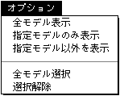

★
Graphic Tools Guide
★
3Dエディタユーザーズマニュアル
▲
戻る
｜ ■
3Dエディタユーザーズマニュアル/2.使用方法
■オプションメニュー

注 意
「オプション」メニューは、モデルリストウインドウが最前面にある場合に追加されます。
●全モデル表示
シーンファイル内の全モデルが表示されます。
●指定モデルのみ表示
指定されているモデルのみ表示し、その他のモデルは非表示になります。
●指定モデル以外を表示
指定されているモデルを非表示にし、その他のモデルを表示します。
●全モデル選択
全てのモデルを選択状態にします。
●選択解除
全てのモデルの選択状態を解除します。
▲
戻る
｜ ■
★
Graphic Tools Guide
★
3Dエディタユーザーズマニュアル
Copyright SEGA ENTERPRISES, LTD., 1997
 ★Graphic Tools Guide
★3Dエディタユーザーズマニュアル
★Graphic Tools Guide
★3Dエディタユーザーズマニュアル
★Graphic Tools Guide
★3Dエディタユーザーズマニュアル
★Graphic Tools Guide
★3Dエディタユーザーズマニュアル